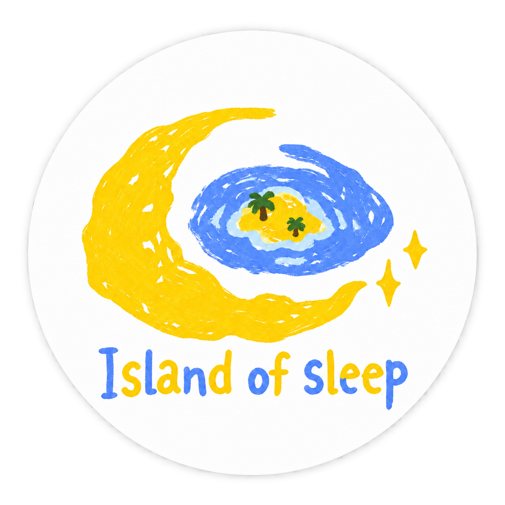
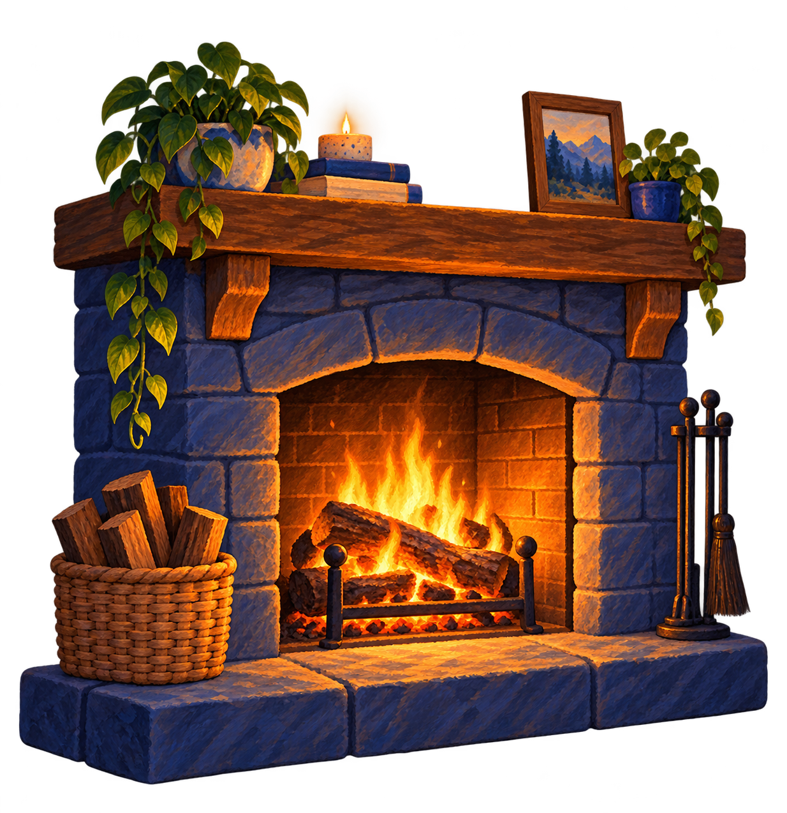
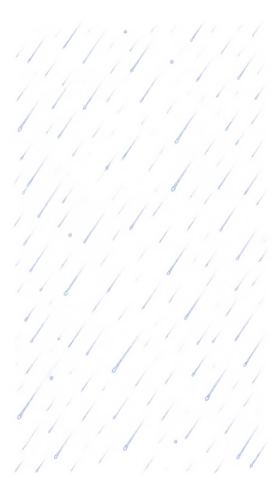
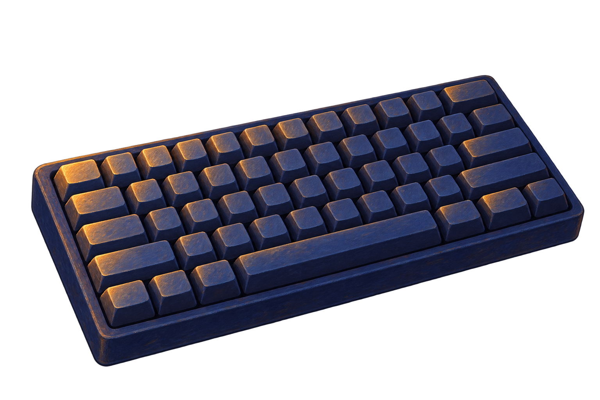

规则建议 · 已解释
窗外小雨 + 室内暖声
你想要稳定的陪伴，又明确避开雷声，所以我把小雨放在窗外，把壁炉留在室内。

一份已经准备好的 30 分钟方案，等你把声音放进今晚的小岛。

壁炉
小雨先试听，再把喜欢的声音带进你的睡前小屋。
像窗外很远的雨，保持稳定，不抢走注意力。

室内细节声 · 可加入方案
点一句，眠屿会解释它为什么这样安排。
你想要稳定的陪伴，又明确避开雷声，所以我把小雨放在窗外，把壁炉留在室内。
一段没有悬念、适合慢慢听完的海边短篇。
没有追逐、反转或突然音效。故事结束后只留下轻柔环境声，并按方案渐弱。